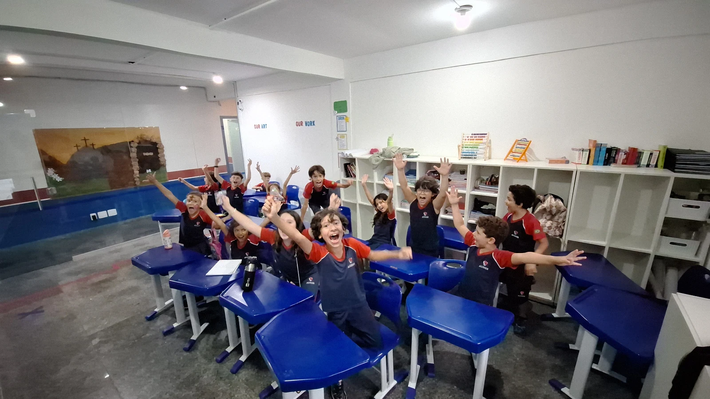
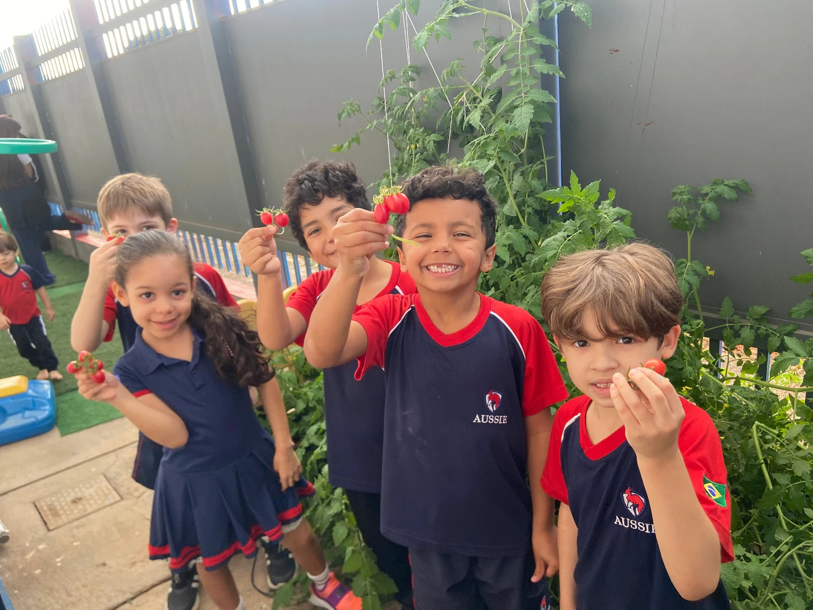
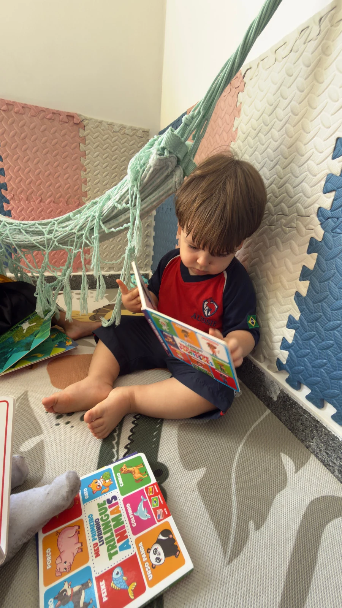

Elementary
Desafios que crescem, sem perder o encantamento.
Ampliamos gradativamente os desafios acadêmicos sem perder aquilo que caracteriza a infância: a curiosidade, o encantamento e o prazer em aprender.
Proposta da fase
Excelência acadêmica com metodologias ativas.
A rotina combina excelência acadêmica com metodologias ativas, projetos interdisciplinares, investigação científica, desenvolvimento da leitura e da escrita, raciocínio lógico, educação financeira, artes, educação física e o fortalecimento das competências socioemocionais.
O que estimulamos
Objetivos de desenvolvimento.
Projetos interdisciplinares
Conteúdos conectados entre si e à vida real.
Investigação científica
Método e curiosidade aplicados a perguntas reais.
Leitura, escrita e raciocínio lógico
Bases sólidas para os desafios acadêmicos seguintes.
Educação financeira
Primeiros conceitos de valor, escolha e responsabilidade.
Artes e educação física
Corpo e criatividade como parte da formação integral.
Competências socioemocionais
Fortalecidas ao longo de toda a rotina escolar.
O papel do inglês
Currículo australiano, fluência natural.
As disciplinas ministradas em inglês seguem o currículo australiano, permitindo que os estudantes utilizem o idioma como ferramenta de aprendizagem e comunicação em diferentes contextos, desenvolvendo fluência de maneira natural, ao mesmo tempo em que constroem conhecimentos sólidos para os desafios do futuro.

Rotina ilustrativa
Um dia no Ensino Fundamental I.
Sem horários fixos: a sequência ilustra o espírito do dia.
Chegada e acolhimento
Início do dia com organização e autonomia.
Projetos interdisciplinares
Investigação científica e resolução de problemas.
Disciplinas em inglês: currículo australiano
Idioma como ferramenta de aprendizagem e comunicação.
Leitura, escrita e raciocínio lógico
Consolidação das bases acadêmicas.
Artes e educação física
Movimento e expressão criativa.
Socioemocional e despedida
Encerramento do dia com reflexão e afeto.
Ambiente e segurança
Espaços para investigar e criar.
Salas, laboratórios e áreas para projetos são organizados para apoiar a investigação científica e o trabalho em equipe, sempre com segurança e acompanhamento próximo.
O que se constrói nesta fase
Competências desenvolvidas
Ambiente real
O Ensino Fundamental I na prática.

Laboratório de ciências
BibliotecaConheça o Ensino Fundamental I de perto.
Agende uma visita e veja como unimos excelência acadêmica e encantamento em cada dia de aula.